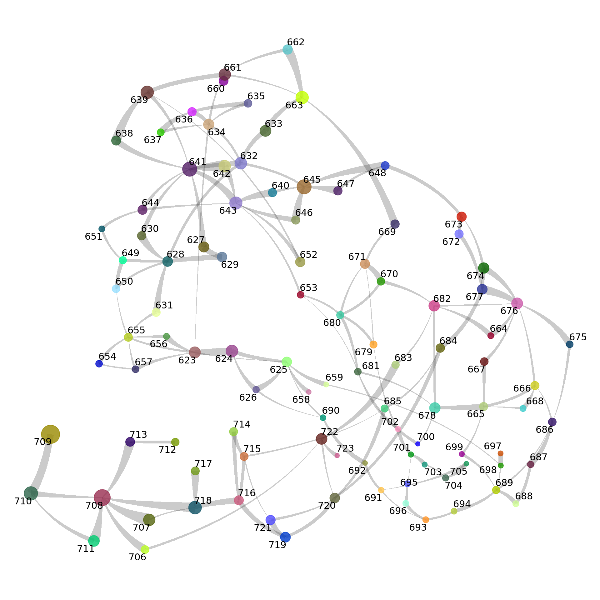

Creating a constellation plot
This notebook can be used to create a constellation plot.
For the purpose of this notebook, we will use the data from GABAergic
CGE-derived neurons in cortex. This data is a subset of the data from
the Allen
Brain Cell Atlas.
This notebook will first construct the knn matrix by running the
get_knn_graph() function which serves as part of the input
for the plot_constellation() function. More information
about the functions and their input requirements can be found here.
library(ggplot2)
library(purrr)
library(scrattch.vis)
library(scrattch.hicat)
library(Matrix)
library(dplyr)
library(tidyr)
library(parallel)
library(bigstatsr)
library(scrattch.bigcat)
library(data.table)
library(arrow)
library(BiocNeighbors)
URL = 'https://allen-brain-cell-atlas.s3-us-west-2.amazonaws.com/metadata/WMB-taxonomy/20231215/cl.df_CCN202307220.xlsx'
data = rio::import_list(URL)
colors <- rio::import("https://allen-brain-cell-atlas.s3-us-west-2.amazonaws.com/metadata/WMB-taxonomy/20231215/views/cluster_to_cluster_annotation_membership_color.csv")
URL = "https://allen-brain-cell-atlas.s3-us-west-2.amazonaws.com/metadata/WMB-10X/20231215/cell_metadata.csv"
anno.df = rio::import(URL)
cl.df <- data$cluster_annotation
cl.df <- cl.df[cl.df$class_label != "LQ",]
# add colors to cluster data frame
colors$cluster_alias <- as.character(as.integer(colors$cluster_alias))
cl.df <- cl.df %>% left_join(colors, by=c("cl"="cluster_alias"))
select.columns <- colnames(cl.df)[grep("^supertype", colnames(cl.df))]
st.df <- cl.df %>% group_by_at(select.columns) %>% summarise(n=n())
select.columns <- colnames(cl.df)[grep("^subclass", colnames(cl.df))]
sc.df <- cl.df %>% group_by_at(select.columns) %>% summarise(n=n())
select.columns <- colnames(cl.df)[grep("^class", colnames(cl.df))]
c.df <- cl.df %>% group_by_at(select.columns) %>% summarise(n=n())
cl.df <- cl.df %>% filter(class_id == 6)
cl.df$cl <- as.integer(as.character(cl.df$cl))
anno.df <- anno.df %>%
filter(cluster_alias %in% cl.df$cl) %>%
# filter(library_method == "10Xv3") %>%
left_join(cl.df[,c(1:12)], by=c("cluster_alias"="cl"))
rownames(anno.df) <- anno.df$cell_label
One of the inputs required to generate the KNN graph is a reduced
dimension matrix. For the purpose of this notebook a pre-made matrix is
downloaded
URL <- "https://allen-share.s3.us-east-2.amazonaws.com/scrattch.example/CTX-CGE_GABA.rd.dat.csv"
rd.dat.df <- rio::import(URL)
rd.dat = as.matrix(rd.dat.df[,-1])
row.names(rd.dat) = rd.dat.df[[1]]
URL <- "https://allen-share.s3.us-east-2.amazonaws.com/scrattch.example/CTX-CGE_GABA.umap.2d.csv"
umap.df <- rio::import(URL, header = T)
row.names(umap.df) = umap.df[[1]]
umap.df = umap.df[,-1]
Cluster constellation
cl.cl = with(anno.df %>% filter(library_method=="10Xv3" &
!is.na(subclass_id_label) & cluster_alias %in% cl.df$cl), setNames(cluster_id, cell_label))
rd.dat = rd.dat[intersect(rownames(rd.dat),names(cl.cl)),]
result = get_knn_graph(rd.dat, cl=cl.cl, k =50)
Select the most robust edges for plotting
knn.cl.df = result$knn.cl.df
knn.cl.df = knn.cl.df %>% group_by(cl.from) %>% mutate(cl.from.rank = rank(-Freq))
knn.cl.df = knn.cl.df %>% group_by(cl.to) %>% mutate(cl.to.rank = rank(-Freq))
select.knn.cl.df = with(knn.cl.df, knn.cl.df[odds > 1 & pval.log < log(1/100000) & (frac > 0.1 | frac > 0.03 & Freq > 100) & (cl.from.rank < 4| cl.to.rank < 4),])
Create the nodes to be plotted on the constellation. The nodes are
located at the centroid location of cells within a grouping of cells.
The grouping of cells in this case is cluster. For plotting a few
columns are expected by the function, these include;
cluster_id
cluster_label
cluster_color
cluster_size
prefix = "CTX-CGE"
cl.center.df = as.data.frame(get_RD_cl_center(umap.df,cl.cl))
cl.df$cluster_size <- rowSums(cl.df[,c("v3.size", "v2.size", "multiome.size" )])
cl.center.df$cluster_id = as.integer(as.character(row.names(cl.center.df) ))
cl.center.df <- cl.center.df %>% left_join(cl.df[,c(1:12,48:53)])
cl.center.df$cluster_label <- cl.center.df$cluster_id_label
rownames(cl.center.df) <- cl.center.df$cluster_id
# set cl as cluster_id since that was used to summarise the edges
cl.center.df$cl = as.integer(as.character(row.names(cl.center.df) ))
tmp.cl = cl.center.df$cluster_id
tmp.knn.cl.df = select.knn.cl.df %>% filter(cl.from %in% tmp.cl & cl.to %in% tmp.cl)
c.plot=plot_constellation(tmp.knn.cl.df,
cl.center.df=cl.center.df,
out.dir="./",
prefix=paste0(prefix,".cluster.stcol"),
node.label="cluster_id",
exxageration=2,
plot.parts=FALSE,
return.list = T,
node.dodge = F,
label_repel = TRUE,
label.size = 4,
plot.height = 15,
plot.width = 15)
c.plot$constellation

Adjust the color of the nodes to reflect subclasses
cl.center.df$cluster_color <- cl.center.df$subclass_color
c.plot=plot_constellation(tmp.knn.cl.df,
cl.center.df=cl.center.df,
out.dir="./", # directory for saving files
prefix=paste0(prefix,".cluster.sccol"), #filename for saving
node.label="cluster_id",
exxageration=2,
plot.parts=FALSE,
return.list = T,
node.dodge = F,
label_repel = TRUE,
label.size = 4,
plot.height = 15,
plot.width = 15)
c.plot$constellation

LS0tCnRpdGxlOiAiQ29uc3RlbGxhdGlvbiBwbG90IgphdXRob3I6ICJDaW5keSB2YW4gVmVsdGhvdmVuIgpvdXRwdXQ6CiAgaHRtbF9kb2N1bWVudDoKICAgIHRvYzogdHJ1ZQogICAgdG9jX2Zsb2F0OiB0cnVlCiAgICBjb2RlX2Rvd25sb2FkOiB0cnVlCiAgICBjb2RlX2ZvbGRpbmc6IGhpZGUKZGF0ZTogIjIwMjQtMDUtMjMiCmVkaXRvcl9vcHRpb25zOiAKICBtYXJrZG93bjogCiAgICB3cmFwOiA3MgotLS0KClwKXAoKIyMgQ3JlYXRpbmcgYSBjb25zdGVsbGF0aW9uIHBsb3QKXAoKVGhpcyBub3RlYm9vayBjYW4gYmUgdXNlZCB0byBjcmVhdGUgYSBjb25zdGVsbGF0aW9uIHBsb3QuCgpGb3IgdGhlIHB1cnBvc2Ugb2YgdGhpcyBub3RlYm9vaywgd2Ugd2lsbCB1c2UgdGhlIGRhdGEgZnJvbSBHQUJBZXJnaWMKQ0dFLWRlcml2ZWQgbmV1cm9ucyBpbiBjb3J0ZXguIFRoaXMgZGF0YSBpcyBhIHN1YnNldCBvZiB0aGUgZGF0YSBmcm9tCnRoZSBbQWxsZW4gQnJhaW4gQ2VsbCBBdGxhc10oaHR0cHM6Ly9hbGxlbmluc3RpdHV0ZS5naXRodWIuaW8vYWJjX2F0bGFzX2FjY2Vzcy9pbnRyby5odG1sKS4KClRoaXMgbm90ZWJvb2sgd2lsbCBmaXJzdCBjb25zdHJ1Y3QgdGhlIGtubiBtYXRyaXggYnkgcnVubmluZyB0aGUKYGdldF9rbm5fZ3JhcGgoKWAgZnVuY3Rpb24gd2hpY2ggc2VydmVzIGFzIHBhcnQgb2YgdGhlIGlucHV0IGZvciB0aGUKYHBsb3RfY29uc3RlbGxhdGlvbigpYCBmdW5jdGlvbi4gTW9yZSBpbmZvcm1hdGlvbiBhYm91dCB0aGUgZnVuY3Rpb25zCmFuZCB0aGVpciBpbnB1dCByZXF1aXJlbWVudHMgY2FuIGJlIGZvdW5kIFtoZXJlXShodHRwczovL2dpdGh1Yi5jb20vQWxsZW5JbnN0aXR1dGUvc2NyYXR0Y2guYmlnY2F0L2Jsb2IvbWFzdGVyL1IvS05OLmdyYXBoLlIpLgoKYGBge3Iga2xpcHB5LCBlY2hvPUZBTFNFLCBpbmNsdWRlPVRSVUV9CmtsaXBweTo6a2xpcHB5KCkKYGBgCgpgYGB7ciBzZXR1cCwgaW5jbHVkZT1GQUxTRX0Ka25pdHI6Om9wdHNfY2h1bmskc2V0KHdhcm5pbmcgPSBGQUxTRSwgbWVzc2FnZSA9IEZBTFNFKSAKYGBgCgpgYGB7ciBsb2FkaW5nIGxpYnMsIGVjaG89VH0KbGlicmFyeShnZ3Bsb3QyKQpsaWJyYXJ5KHB1cnJyKQpsaWJyYXJ5KHNjcmF0dGNoLnZpcykKbGlicmFyeShzY3JhdHRjaC5oaWNhdCkKbGlicmFyeShNYXRyaXgpCmxpYnJhcnkoZHBseXIpCmxpYnJhcnkodGlkeXIpCmxpYnJhcnkocGFyYWxsZWwpCmxpYnJhcnkoYmlnc3RhdHNyKQpsaWJyYXJ5KHNjcmF0dGNoLmJpZ2NhdCkKbGlicmFyeShkYXRhLnRhYmxlKQpsaWJyYXJ5KGFycm93KQpsaWJyYXJ5KEJpb2NOZWlnaGJvcnMpCgpgYGAKCmBgYHtyIGxvYWQtQUJDZGF0YSwgLCBldmFsPVR9ClVSTCA9ICdodHRwczovL2FsbGVuLWJyYWluLWNlbGwtYXRsYXMuczMtdXMtd2VzdC0yLmFtYXpvbmF3cy5jb20vbWV0YWRhdGEvV01CLXRheG9ub215LzIwMjMxMjE1L2NsLmRmX0NDTjIwMjMwNzIyMC54bHN4JwpkYXRhID0gcmlvOjppbXBvcnRfbGlzdChVUkwpCgpjb2xvcnMgPC0gcmlvOjppbXBvcnQoImh0dHBzOi8vYWxsZW4tYnJhaW4tY2VsbC1hdGxhcy5zMy11cy13ZXN0LTIuYW1hem9uYXdzLmNvbS9tZXRhZGF0YS9XTUItdGF4b25vbXkvMjAyMzEyMTUvdmlld3MvY2x1c3Rlcl90b19jbHVzdGVyX2Fubm90YXRpb25fbWVtYmVyc2hpcF9jb2xvci5jc3YiKQoKVVJMID0gImh0dHBzOi8vYWxsZW4tYnJhaW4tY2VsbC1hdGxhcy5zMy11cy13ZXN0LTIuYW1hem9uYXdzLmNvbS9tZXRhZGF0YS9XTUItMTBYLzIwMjMxMjE1L2NlbGxfbWV0YWRhdGEuY3N2Igphbm5vLmRmID0gcmlvOjppbXBvcnQoVVJMKQoKYGBgCgpgYGB7ciBzZXQtY29sb3JzLCAgZXZhbD1UfQoKY2wuZGYgPC0gZGF0YSRjbHVzdGVyX2Fubm90YXRpb24KY2wuZGYgPC0gY2wuZGZbY2wuZGYkY2xhc3NfbGFiZWwgIT0gIkxRIixdCgojIGFkZCBjb2xvcnMgdG8gY2x1c3RlciBkYXRhIGZyYW1lCmNvbG9ycyRjbHVzdGVyX2FsaWFzIDwtIGFzLmNoYXJhY3Rlcihhcy5pbnRlZ2VyKGNvbG9ycyRjbHVzdGVyX2FsaWFzKSkKY2wuZGYgPC0gY2wuZGYgJT4lIGxlZnRfam9pbihjb2xvcnMsIGJ5PWMoImNsIj0iY2x1c3Rlcl9hbGlhcyIpKQoKc2VsZWN0LmNvbHVtbnMgPC0gY29sbmFtZXMoY2wuZGYpW2dyZXAoIl5zdXBlcnR5cGUiLCBjb2xuYW1lcyhjbC5kZikpXQpzdC5kZiA8LSBjbC5kZiAlPiUgZ3JvdXBfYnlfYXQoc2VsZWN0LmNvbHVtbnMpICU+JSBzdW1tYXJpc2Uobj1uKCkpCgpzZWxlY3QuY29sdW1ucyA8LSBjb2xuYW1lcyhjbC5kZilbZ3JlcCgiXnN1YmNsYXNzIiwgY29sbmFtZXMoY2wuZGYpKV0Kc2MuZGYgPC0gY2wuZGYgJT4lIGdyb3VwX2J5X2F0KHNlbGVjdC5jb2x1bW5zKSAlPiUgc3VtbWFyaXNlKG49bigpKQoKc2VsZWN0LmNvbHVtbnMgPC0gY29sbmFtZXMoY2wuZGYpW2dyZXAoIl5jbGFzcyIsIGNvbG5hbWVzKGNsLmRmKSldCmMuZGYgPC0gY2wuZGYgJT4lIGdyb3VwX2J5X2F0KHNlbGVjdC5jb2x1bW5zKSAlPiUgc3VtbWFyaXNlKG49bigpKQoKYGBgCgpgYGB7ciBzdWJzZXQtZGF0YSwgLCBldmFsPVR9CmNsLmRmIDwtIGNsLmRmICU+JSBmaWx0ZXIoY2xhc3NfaWQgPT0gNikKY2wuZGYkY2wgPC0gYXMuaW50ZWdlcihhcy5jaGFyYWN0ZXIoY2wuZGYkY2wpKQoKYW5uby5kZiA8LSBhbm5vLmRmICU+JSAKICBmaWx0ZXIoY2x1c3Rlcl9hbGlhcyAlaW4lIGNsLmRmJGNsKSAlPiUgCiAgIyBmaWx0ZXIobGlicmFyeV9tZXRob2QgPT0gIjEwWHYzIikgJT4lCiAgbGVmdF9qb2luKGNsLmRmWyxjKDE6MTIpXSwgYnk9YygiY2x1c3Rlcl9hbGlhcyI9ImNsIikpIApyb3duYW1lcyhhbm5vLmRmKSA8LSBhbm5vLmRmJGNlbGxfbGFiZWwKCgpgYGAKCk9uZSBvZiB0aGUgaW5wdXRzIHJlcXVpcmVkIHRvIGdlbmVyYXRlIHRoZSBLTk4gZ3JhcGggaXMgYSByZWR1Y2VkCmRpbWVuc2lvbiBtYXRyaXguIEZvciB0aGUgcHVycG9zZSBvZiB0aGlzIG5vdGVib29rIGEgcHJlLW1hZGUgbWF0cml4IGlzCmRvd25sb2FkZWQKCmBgYHtyIGxvYWQtcmRkYXQsICBldmFsPVR9ClVSTCA8LSAiaHR0cHM6Ly9hbGxlbi1zaGFyZS5zMy51cy1lYXN0LTIuYW1hem9uYXdzLmNvbS9zY3JhdHRjaC5leGFtcGxlL0NUWC1DR0VfR0FCQS5yZC5kYXQuY3N2IgoKcmQuZGF0LmRmIDwtIHJpbzo6aW1wb3J0KFVSTCkKcmQuZGF0ID0gYXMubWF0cml4KHJkLmRhdC5kZlssLTFdKQpyb3cubmFtZXMocmQuZGF0KSA9IHJkLmRhdC5kZltbMV1dCmBgYAoKYGBge3IgbG9hZC11bWFwLCAgZXZhbD1UfQpVUkwgPC0gImh0dHBzOi8vYWxsZW4tc2hhcmUuczMudXMtZWFzdC0yLmFtYXpvbmF3cy5jb20vc2NyYXR0Y2guZXhhbXBsZS9DVFgtQ0dFX0dBQkEudW1hcC4yZC5jc3YiCgp1bWFwLmRmIDwtIHJpbzo6aW1wb3J0KFVSTCwgaGVhZGVyID0gVCkKcm93Lm5hbWVzKHVtYXAuZGYpID0gdW1hcC5kZltbMV1dIAp1bWFwLmRmID0gdW1hcC5kZlssLTFdCmBgYAoKIyMjIENsdXN0ZXIgY29uc3RlbGxhdGlvbgoKYGBge3IgY2x1c3Rlci12ZWN0b3IsIGV2YWw9VH0KY2wuY2wgPSB3aXRoKGFubm8uZGYgJT4lIGZpbHRlcihsaWJyYXJ5X21ldGhvZD09IjEwWHYzIiAmIAogICFpcy5uYShzdWJjbGFzc19pZF9sYWJlbCkgJiBjbHVzdGVyX2FsaWFzICVpbiUgY2wuZGYkY2wpLCBzZXROYW1lcyhjbHVzdGVyX2lkLCBjZWxsX2xhYmVsKSkKCnJkLmRhdCA9IHJkLmRhdFtpbnRlcnNlY3Qocm93bmFtZXMocmQuZGF0KSxuYW1lcyhjbC5jbCkpLF0KYGBgCgpgYGB7ciBjbHVzdGVyLWtubiwgIGV2YWw9VH0KcmVzdWx0ID0gZ2V0X2tubl9ncmFwaChyZC5kYXQsIGNsPWNsLmNsLCBrID01MCkgCmBgYAoKU2VsZWN0IHRoZSBtb3N0IHJvYnVzdCBlZGdlcyBmb3IgcGxvdHRpbmcKCmBgYHtyIGNsdXN0ZXItc2VsZWN0LmtubiwgZXZhbD1UfQprbm4uY2wuZGYgPSByZXN1bHQka25uLmNsLmRmIAprbm4uY2wuZGYgPSBrbm4uY2wuZGYgJT4lIGdyb3VwX2J5KGNsLmZyb20pICU+JSBtdXRhdGUoY2wuZnJvbS5yYW5rID0gcmFuaygtRnJlcSkpCmtubi5jbC5kZiA9IGtubi5jbC5kZiAlPiUgZ3JvdXBfYnkoY2wudG8pICU+JSBtdXRhdGUoY2wudG8ucmFuayA9IHJhbmsoLUZyZXEpKQpzZWxlY3Qua25uLmNsLmRmID0gd2l0aChrbm4uY2wuZGYsIGtubi5jbC5kZltvZGRzID4gMSAmIHB2YWwubG9nIDwgbG9nKDEvMTAwMDAwKSAmIChmcmFjID4gMC4xIHwgZnJhYyA+IDAuMDMgJiBGcmVxID4gMTAwKSAmIChjbC5mcm9tLnJhbmsgPCA0fCBjbC50by5yYW5rIDwgNCksXSkKYGBgCgpDcmVhdGUgdGhlIG5vZGVzIHRvIGJlIHBsb3R0ZWQgb24gdGhlIGNvbnN0ZWxsYXRpb24uIFRoZSBub2RlcyBhcmUKbG9jYXRlZCBhdCB0aGUgY2VudHJvaWQgbG9jYXRpb24gb2YgY2VsbHMgd2l0aGluIGEgZ3JvdXBpbmcgb2YgY2VsbHMuClRoZSBncm91cGluZyBvZiBjZWxscyBpbiB0aGlzIGNhc2UgaXMgY2x1c3Rlci4gRm9yIHBsb3R0aW5nIGEgZmV3CmNvbHVtbnMgYXJlIGV4cGVjdGVkIGJ5IHRoZSBmdW5jdGlvbiwgdGhlc2UgaW5jbHVkZTsKCi0gICBjbHVzdGVyX2lkCgotICAgY2x1c3Rlcl9sYWJlbAoKLSAgIGNsdXN0ZXJfY29sb3IKCi0gICBjbHVzdGVyX3NpemUKCmBgYHtyLCBldmFsPVR9CnByZWZpeCA9ICJDVFgtQ0dFIgoKY2wuY2VudGVyLmRmID0gYXMuZGF0YS5mcmFtZShnZXRfUkRfY2xfY2VudGVyKHVtYXAuZGYsY2wuY2wpKSAKCmNsLmRmJGNsdXN0ZXJfc2l6ZSA8LSByb3dTdW1zKGNsLmRmWyxjKCJ2My5zaXplIiwgInYyLnNpemUiLCAibXVsdGlvbWUuc2l6ZSIgICApXSkKCmNsLmNlbnRlci5kZiRjbHVzdGVyX2lkID0gYXMuaW50ZWdlcihhcy5jaGFyYWN0ZXIocm93Lm5hbWVzKGNsLmNlbnRlci5kZikgKSkKY2wuY2VudGVyLmRmIDwtIGNsLmNlbnRlci5kZiAlPiUgbGVmdF9qb2luKGNsLmRmWyxjKDE6MTIsNDg6NTMpXSkKY2wuY2VudGVyLmRmJGNsdXN0ZXJfbGFiZWwgPC0gY2wuY2VudGVyLmRmJGNsdXN0ZXJfaWRfbGFiZWwKcm93bmFtZXMoY2wuY2VudGVyLmRmKSA8LSBjbC5jZW50ZXIuZGYkY2x1c3Rlcl9pZAoKIyBzZXQgY2wgYXMgY2x1c3Rlcl9pZCBzaW5jZSB0aGF0IHdhcyB1c2VkIHRvIHN1bW1hcmlzZSB0aGUgZWRnZXMKY2wuY2VudGVyLmRmJGNsID0gYXMuaW50ZWdlcihhcy5jaGFyYWN0ZXIocm93Lm5hbWVzKGNsLmNlbnRlci5kZikgKSkKCnRtcC5jbCA9IGNsLmNlbnRlci5kZiRjbHVzdGVyX2lkCnRtcC5rbm4uY2wuZGYgPSBzZWxlY3Qua25uLmNsLmRmICU+JSBmaWx0ZXIoY2wuZnJvbSAlaW4lIHRtcC5jbCAmIGNsLnRvICVpbiUgdG1wLmNsKQoKYGBgCgpgYGB7ciBwbG90MSwgIHJlc3VsdHM9J2hpZGUnLCBldmFsPVQsIGZpZy5oZWlnaHQ9MTAsIGZpZy53aWR0aD0xMH0KICBjLnBsb3Q9cGxvdF9jb25zdGVsbGF0aW9uKHRtcC5rbm4uY2wuZGYsIAogICAgICAgICAgICAgICAgICAgICAgICAgICAgY2wuY2VudGVyLmRmPWNsLmNlbnRlci5kZiwgCiAgICAgICAgICAgICAgICAgICAgICAgICAgICBvdXQuZGlyPSIuLyIsCiAgICAgICAgICAgICAgICAgICAgICAgICAgICBwcmVmaXg9cGFzdGUwKHByZWZpeCwiLmNsdXN0ZXIuc3Rjb2wiKSwKICAgICAgICAgICAgICAgICAgICAgICAgICAgIG5vZGUubGFiZWw9ImNsdXN0ZXJfaWQiLAogICAgICAgICAgICAgICAgICAgICAgICAgICAgZXh4YWdlcmF0aW9uPTIsCiAgICAgICAgICAgICAgICAgICAgICAgICAgICBwbG90LnBhcnRzPUZBTFNFLAogICAgICAgICAgICAgICAgICAgICAgICAgICAgcmV0dXJuLmxpc3QgPSBULAogICAgICAgICAgICAgICAgICAgICAgICAgICAgbm9kZS5kb2RnZSA9IEYsCiAgICAgICAgICAgICAgICAgICAgICAgICAgICBsYWJlbF9yZXBlbCA9IFRSVUUsCiAgICAgICAgICAgICAgICAgICAgICAgICAgICBsYWJlbC5zaXplID0gNCwKICAgICAgICAgICAgICAgICAgICAgICAgICAgIHBsb3QuaGVpZ2h0ID0gMTUsCiAgICAgICAgICAgICAgICAgICAgICAgICAgICBwbG90LndpZHRoID0gMTUpCmMucGxvdCRjb25zdGVsbGF0aW9uCgpgYGAKCgoKCiMjIyBBZGp1c3QgdGhlIGNvbG9yIG9mIHRoZSBub2RlcyB0byByZWZsZWN0IHN1YmNsYXNzZXMKYGBge3IgcGxvdDIsIGV2YWw9VCwgcmVzdWx0cz0naGlkZScsZmlnLmhlaWdodD0xMCwgZmlnLndpZHRoPTEwfQoKY2wuY2VudGVyLmRmJGNsdXN0ZXJfY29sb3IgPC0gY2wuY2VudGVyLmRmJHN1YmNsYXNzX2NvbG9yCiAgYy5wbG90PXBsb3RfY29uc3RlbGxhdGlvbih0bXAua25uLmNsLmRmLCAKICAgICAgICAgICAgICAgICAgICAgICAgICAgIGNsLmNlbnRlci5kZj1jbC5jZW50ZXIuZGYsIAogICAgICAgICAgICAgICAgICAgICAgICAgICAgb3V0LmRpcj0iLi8iLCAjIGRpcmVjdG9yeSBmb3Igc2F2aW5nIGZpbGVzCiAgICAgICAgICAgICAgICAgICAgICAgICAgICBwcmVmaXg9cGFzdGUwKHByZWZpeCwiLmNsdXN0ZXIuc2Njb2wiKSwgI2ZpbGVuYW1lIGZvciBzYXZpbmcKICAgICAgICAgICAgICAgICAgICAgICAgICAgIG5vZGUubGFiZWw9ImNsdXN0ZXJfaWQiLAogICAgICAgICAgICAgICAgICAgICAgICAgICAgZXh4YWdlcmF0aW9uPTIsCiAgICAgICAgICAgICAgICAgICAgICAgICAgICBwbG90LnBhcnRzPUZBTFNFLAogICAgICAgICAgICAgICAgICAgICAgICAgICAgcmV0dXJuLmxpc3QgPSBULAogICAgICAgICAgICAgICAgICAgICAgICAgICAgbm9kZS5kb2RnZSA9IEYsCiAgICAgICAgICAgICAgICAgICAgICAgICAgICBsYWJlbF9yZXBlbCA9IFRSVUUsCiAgICAgICAgICAgICAgICAgICAgICAgICAgICBsYWJlbC5zaXplID0gNCwKICAgICAgICAgICAgICAgICAgICAgICAgICAgIHBsb3QuaGVpZ2h0ID0gMTUsCiAgICAgICAgICAgICAgICAgICAgICAgICAgICBwbG90LndpZHRoID0gMTUpCmMucGxvdCRjb25zdGVsbGF0aW9uCgpgYGAKCg==